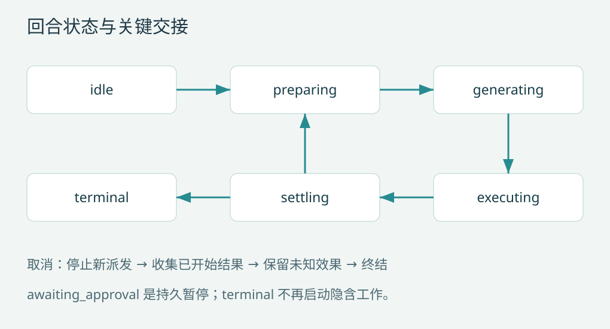

第 4 章 执行内核：输入认领、模型步与停止条件
将主循环写成状态机
建议状态为 idle、preparing、generating、executing、awaiting_approval、stopping 和 terminal。状态机拥有会话写权限，工具与模型回调通过消息投递结果。每个状态允许的输入不同：generating 可以接收取消与新输入，awaiting_approval 可以接收审批响应，terminal 不能再偷偷启动工具。

while turn is active:
claim inputs once at the step boundary
snapshot = prepare_context_and_tool_plan()
request = persist_and_freeze(snapshot)
response = await model_attempts(request)
if response is incomplete: settle_attempt_and_choose_recovery()
else:
commit assistant message and call intents
outcomes = await scheduler.execute(response.calls)
commit outcomes in source order
apply queued steering at next boundary
decision = stop_policy(history, verification, budget, pending_input)这段是设计伪代码。实际代码还要处理审批暂停、存储失败和取消收敛，不能把它直接包进无限 while True 就认为实现完成。
输入为什么只能认领一次
用户在模型生成时补充“只改测试”。系统先保存输入，再在下一可接纳边界认领。网络 attempt 重试不应重复追加这条输入。需要记录 input_id 和 claimed_by_step，将认领与请求准备的相关状态一起提交。
如果请求准备在认领后被取消，要规定输入是留给未完成 step，还是归还待处理队列。推荐持久记录接纳状态，恢复时按状态处理，不通过“最后一条消息似乎是用户”猜测。DeepSeek 的准备调用与输入接纳顺序、Pi 的 steering/follow-up 读取位置可提供参考。D02P01
Stop policy 不是一个 finish reason
模型没有工具请求，只意味着本次生成没有提出行动。框架还要检查未完成验证、排队输入、待决审批和显式停止要求。建议优先级：用户取消与硬预算优先；协议或执行未知阻塞自动继续；自然工具结果触发下一步；必要验证未完成时允许受限继续；最后才正常结束。
继续策略需要限制次数。一个“你还没完成”的 stop hook 如果没有新证据和预算，会制造无限自我确认循环。Codex 在停止 hook 与后续输入之间有明确处理，说明停止本身就是执行协议。C01
三种不同的重试
模型网络重试复用已冻结请求，改变 attempt 身份；上下文超限后的压缩产生新的 request revision；工具失败后的修复通常需要模型新 step。不能把三者都写成 continue 而不更新身份。尤其不能在模型网络重试里重新执行上一批工具。
一个 step 若已经提交助手消息及调用意图，恢复应从工具状态继续；不能再次请求模型生成另一批同义调用。持久化章节将给出步骤状态与事务组合。
带工具的正常时序
| 时刻 | 主循环行为 | 必须持久的事实 |
|---|---|---|
| t0 | 接收用户输入 | input received |
| t1 | 固定上下文与工具版本 | step prepared / request revision |
| t2 | 请求模型，接收流 | attempt started；增量可短暂 |
| t3 | 接收完整响应 | assistant settled + call intents |
| t4 | 准备、批准并派发工具 | authorization / dispatched |
| t5 | 接纳结果 | tool result + step settlement |
| t6 | 决定继续或结束 | next step 或 turn ended |
流式 UI 可以在 t2 显示文字，但 t3 前的文字不能作为已经完成的行动证明。
取消到达不同阶段时如何处理
准备中取消：不发模型请求，保留未完成输入。生成中取消：停止继续消费，结算中断尝试，拒绝不完整参数。工具等待中取消：不派发。工具执行中取消：停止补充新调用，通知可取消执行，等待已开始调用收敛；超时仍不能确认结果则标记 unknown。停止完成后才发布确定终结。
参考内核采用保守的“完整助手响应后再派发工具”，减少第一次实现的状态交叉。第 6 章说明如何升级为完整工具块就绪后提前执行，同时处理流式回退。两种方案都有效，选择取决于延迟收益是否值得额外恢复复杂度。
验收案例
脚本模型第一次要求读取、第二次编辑、第三次测试、第四次结束。检查模型真实调用次数、历史配对和终态；再让它永远调用同一工具，确认预算停止；让它返回带空文本的完整工具响应，确认仍执行工具；让它返回无工具的文本但验证未完成，确认不会错误宣布完成。